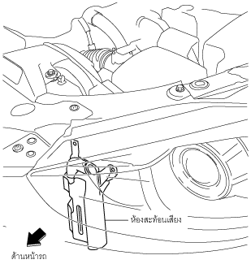

ห้องสะท้อนเสียง [SKYACTIV-G 2.0, SKYACTIV-G 2.5]
id0113z9003400
จุดประสงค์/การทำงาน
• การกระเพื่อมของอากาศเข้าจะถูกควบคุมและเสียงอากาศเข้าจะลดลงโดยการเพิ่มช่องทางอากาศเข้า
โครงสร้าง
• ห้องสะท้อนเสียงจะติดตั้งอยู่ที่ท่ออากาศภายนอก

ac5uun00000025